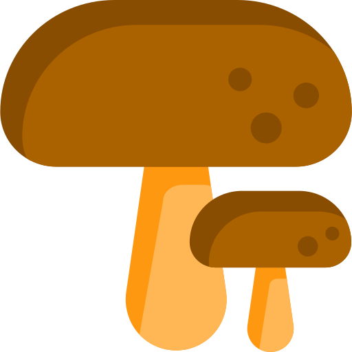

Which color most closely represents
your mushroom?
How is it shaped?

Which fungus is among-us?
We are not responsible for any hospitalization, dismemberment, sickness, or death as a result of using our site. Mushrooms are wonderful but very dangerous! Always be sure that you have the right mushroom before consuming. When testin a mushroom for the first time, make sure to eat a small piece and wait a full 24 hours before consuming more to ensure minimum risk of poisoning!
Have another mushroom? Click the button to identify it!